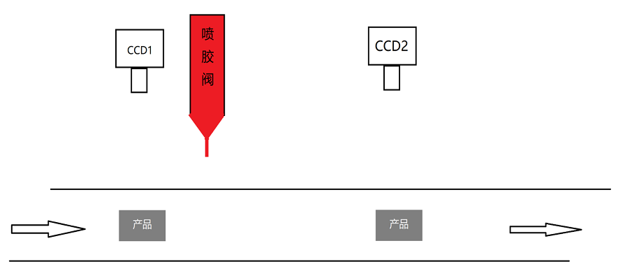
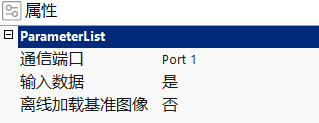
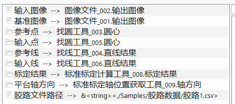
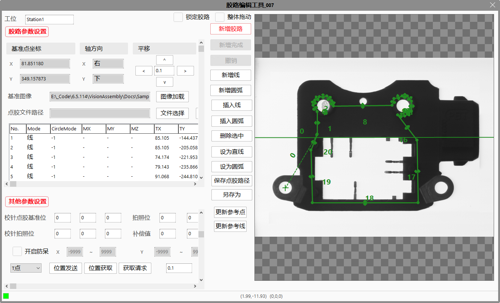
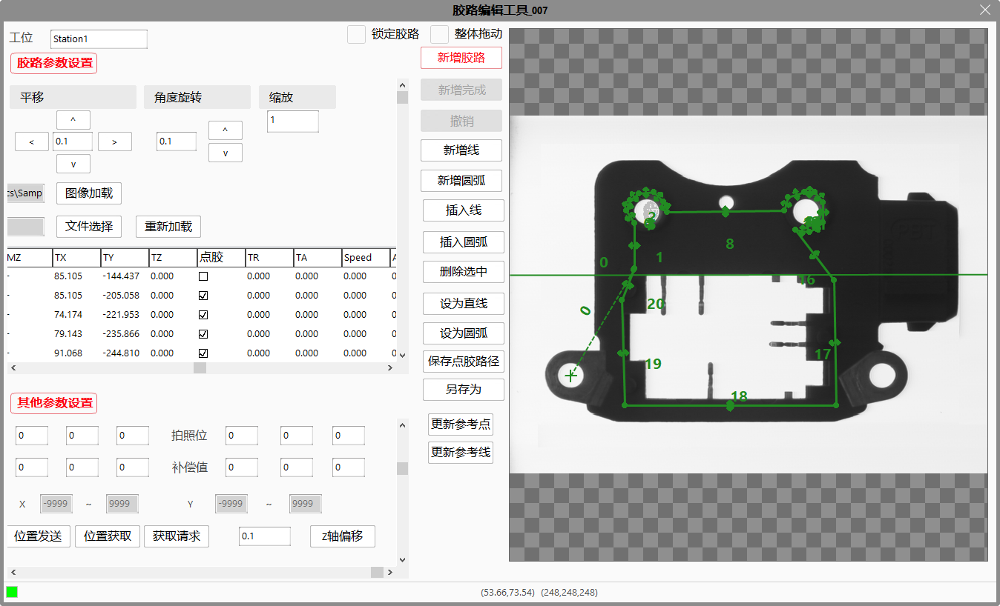

胶路编辑工具应用于点胶项目中，主要功能有点胶引导和胶路编辑两部分。点胶引导是通过将输入的像素坐标转化为平台物理坐标，同时计算出旋转角度，一起输出出去，实现引导；胶路编辑功能是在高级属性界面支持手动绘制胶路，并保存为数据文件。
点胶项目工作流程如下，通过视觉实现点胶位置引导。

胶路编辑工具将像素坐标和标定结果经过计算得出平台物理坐标并输出；将输入线和参考线计算得出输出角度。胶路文件中保存的是胶路上各点相对于基准点的相对位置。
整个胶路位置由起始点、输出角度和胶路数据文件共同决定。

通信端口
用于位置发送、位置获取的通信端口。
输入数据
选择“是”时，从数据链链入的文件路径读取胶路数据；当选择“否”时，在高级属性界面通过离线方式加载胶路数据。
离线加载基准图像
选择“是”时，在高级属性界面通过离线方式加载基准图像；选择“否”时，通过数据链链入基准图像。
角度归一化
角度归一化是指对输出角度进行转换，使之限定在一定的范围内。角度归一化有4种，[-90°, 90°)、[-180°, 180°)、[0°, 180°)和[0°, 360°)。

输入图像
输入图像主要用于显示，计算中不会用到。
基准图像
当属性栏上“离线加载基准图像”选择“否”时，数据链上基准图像可用，链入基准图像用于胶路绘制。
参考点
绘制胶路时，模板图像上胶路的基准点，主要用于胶路绘制。
输入点
图像上的点坐标，将输入点转换为物理坐标输出，作为实际点胶时胶路的起始点输出。
参考线
模板图像上的找线结果，用于计算当前图像和基准图像的夹角。
输入线
基于当前图像的找线结果，与参考线计算角度，得出输出夹角。
标定结果
用于将输入的像素坐标转换为物理坐标。
平台轴方向
默认的轴方向是向右向下，当轴方向非默认时，需要链入平台轴方向，否则坐标计算结果和胶路显示会出现异常。
胶路文件路径
当属性栏“输入数据”选择“是”时，数据链上胶路文件路径可用，通过链入的胶路文件路径读取胶路数据。
胶路编辑窗口如下：

图像加载
当属性栏上“离线加载基准图像”选择“否”时，支持在高级属性界面上离线加载一幅基准图像。
文件选择
离线加载一个胶路文件，然后可在右侧图像上做修改。当属性栏上“输入数据”选择“否”时，高级属性界面上离线加载的胶路数据为工具视图上实时显示的胶路。
重新加载
点击重新加载，将点胶文件中的胶路数据重新读取，刷新到界面上。
新增胶路，新增完成，撤销
点击新增胶路按钮后，在图像上点选n个位置，点击新建完成或双击图像，即完成了胶路的新建。生成的胶路是将点选的n个位置按顺序用线段连在一起。
新增圆弧
点击新增圆弧按钮，在胶路的尾部新增一段默认圆弧。
新增线
点击新增线按钮，在胶路的尾部新增一段默认线段。
插入圆弧
选中胶路上的一段线段或圆弧，点击插入圆弧按钮，在所选中的线段或圆弧前插入一段默认圆弧。
插入线
选中胶路上的一段线段或圆弧，点击插入线，在所选中的线段或圆弧前插入一段默认线段。
删除选中
选中胶路上的一段线段或圆弧，点击删除选中按钮，所选中的线段或圆弧将被删除。胶路中只剩下一段线段或一段圆弧时，不再支持删除。
设为直线
选中胶路上的一段圆弧，点击设为直线按钮，所选中的圆弧将变为点段。
设为圆弧
选中胶路上的一段线段，点击设为圆弧按钮，所选中的线段将变为圆弧。
保存点胶路径
当点胶文件路径编辑框为空时，点击保存点胶路径后会弹出文件夹浏览对话框，可以选择点胶文件要保存的路径；当编辑框内不为空时，点胶数据将保存到所显示的胶路文件中。
另存为
点击另存为按钮，弹出文件夹浏览对话框，可选择点胶文件要保存的路径对胶路数据进行保存。

工位
填写工位名称，在位置发送时工位名需要一起发送。
基准点坐标
参考点的平面像素坐标值。
平移
编辑框内写入要移动的物理坐标值，点击四个方向的按钮后，图像上的胶路将根据物理坐标值转换为图像坐标进行移动。
角度旋转
编辑框内写入要旋转的角度，是角度不是弧度，取值范围（0~180），然后点击按钮实现胶路基于基准点的旋转。
缩放
编辑框内写入要对胶路进行缩放的比例，输入后胶路会实时进行缩放，取值范围为（0~10】，默认为1。每次保存、加载CSV胶路文件后，缩放恢复为默认值1。
锁定胶路
勾选锁定胶路后，胶路GUI和编辑控件都将被禁用，每次打开窗口默认为锁定状态，取消勾选后才可以进行胶路编辑。
整体拖动
只有“整体拖动”被选中时，图像上的胶路才允许整体被拖动，否则不能鼠标整体拖动胶路，只能微调。
校针点胶基准位，拍照位，校针拍照位，补偿位
这几个值为了适配点胶环境，计算胶路起始点的位置：
胶路起始点坐标=由输入点像素坐标转换的平台坐标+校针点胶基准位坐标+拍照位坐标-校针拍照位坐标+补偿位坐标
开启防护
即“防呆”功能，当开启防护时，计算所得的胶路起始点如果超出所设置的坐标范围，工具将返回false，报异常，不输出点坐标；当不开启防护时，将不对计算所得的胶路起始点坐标做检查。
位置发送
在图像或列表上选中一个点，点击位置发送，所选位置的坐标会通过属性栏上设置的通信端口发送出去。
位置获取
在图像或列表上选中一个点，点击位置获取，会从属性栏上设置的通信端口获取一个点的坐标，更新到所选中的点中，列表和图像将同步进行刷新。
Z轴偏移
在图像或列表上选中一个点，点击Z轴偏移，所选位置的Z坐标会通过属性栏上设置的通信端口发送出去。
更新参考点
数据链上链入参考点，但工具内部的参考点不会随着工具执行更新，只有点击更新参考点按钮时，工具内部的参考点才更新为数据链上最新的参考点。
更新参考线
数据链上链入参考线，但工具内部的参考线不会随着工具执行更新，只有点击更新参考线按钮时，工具内部的参考线才更新为数据链上最新的参考线。
| 现象描述 | 解决方法 |
|---|---|
| 输出的胶路起始点位置不是真正要点胶的位置 | 检查链入的轴方向是否正确，如果正确检查校针点胶基准位、拍照位、校针拍照位填写是否正确，如果没问题可能是平台误差导致，通过补偿位的值来弥补误差。 |
| 文件保存失败 | 检查要保存的文件是否被打开，如果被打开将文件关闭，然后重新保存 |
见使用向导。
| 参数名称 | 参数说明 |
|---|---|
| 输入图像 | 输入图像宽度、高度、像素大小。 |
| 执行结果 | 工具执行结果。 |
| 执行时间 | 工具执行时间。 |
| 胶路起始点 | 点胶的起始平台坐标。 |
| 输出角度 | 胶路的旋转角度，是输入线和基准线的夹角。 |
| 胶路数据 | 输出胶路的数据，包括各个圆弧和线段的各个点坐标，可以通过脚本获取。 |
| 胶路点集 | 输出胶路平台坐标点集，每个点由一组三维数据（X，Y，Z）表示，每段胶路由两个点（中点和尾点）构成，点集中包括胶路起始点和每段胶路的中点和末端点（若为线段，中点为（0,0,0））。 |
| 胶路数据集 | 将胶路点集以字符串格式输出，包括起始点和每段胶路的中点和尾点；每段胶路输出格式：序号，胶路形状（0起始点，1直线，2圆弧），是否点胶（1点胶，0不点胶），MX，MY，MZ，TX，TY，TZ；起始点为（0,0,起始点X,起始点Y,0），所以输出字符串为：0,0,起始点X,起始点Y,起始点Z,1,1,1,MX,MY,MZ,TX,TY,TZ… |
参见“\Samples\胶路编辑工具.gvp”。